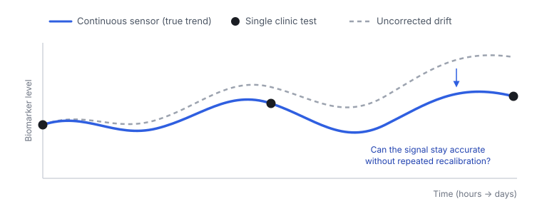
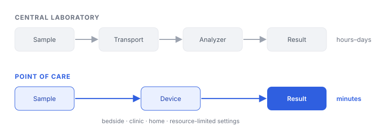
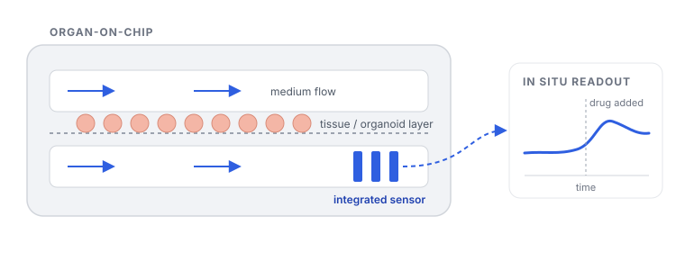

Research
Research Interests
Making clinically relevant biochemical information measurable: continuously on the body, reliably at the point of care, and in real time within engineered tissue models.
01 / ON THE BODY
Wearable & Continuous Biochemical Monitoring
Following biochemical trends over time, not single snapshots
Most clinical biochemistry is still measured as isolated snapshots in a central laboratory, while disease progression and treatment response unfold continuously. I am interested in wearable and minimally invasive sensors that follow biochemical markers in sweat and interstitial fluid over hours to days, so that changes can be read as trends rather than single values.
My work on calibration-free potassium quantification and solid-contact interfaces points to a question I want to pursue in my Ph.D.: how sensing interfaces can be designed to remain accurate during long-term operation on the body, where signal drift, biofouling, and changing sample conditions limit how far a single calibration can be trusted.
Open question
How can an electrochemical interface remain quantitatively reliable over days of continuous operation, without repeated recalibration?

02 / AT THE POINT OF CARE
Point-of-Care Diagnostics
Trustworthy results outside the central laboratory
An accurate laboratory measurement is of limited use if the result arrives after the clinical decision has been made. I am interested in diagnostics that deliver laboratory-comparable results at the bedside, in the clinic, or at home, using sensitive, low-cost assays that non-specialists can run.
Evaluating a disposable potassium strip in patients receiving hemodialysis showed me that sample type, user handling, and agreement with reference methods matter as much as analytical sensitivity. In the longer term, I hope to develop diagnostic tools that remain usable in resource-limited settings, where access to a central laboratory cannot be assumed.
Open question
What does it take for a point-of-care result to be trusted for a clinical decision, outside the central laboratory?

03 / IN VITRO
Sensor-Integrated Organ-on-Chip
Reading tissue responses as they happen
Organ-on-chip and organoid models reproduce key features of human tissue, but their responses are often measured only at endpoints. I am interested in integrating biochemical sensors into these models so that metabolic changes and responses to drugs can be followed in real time, extending continuous measurement from the body to engineered tissue.
Open question
Can in situ biochemical sensing turn tissue models into continuous readouts of disease progression and drug response?
